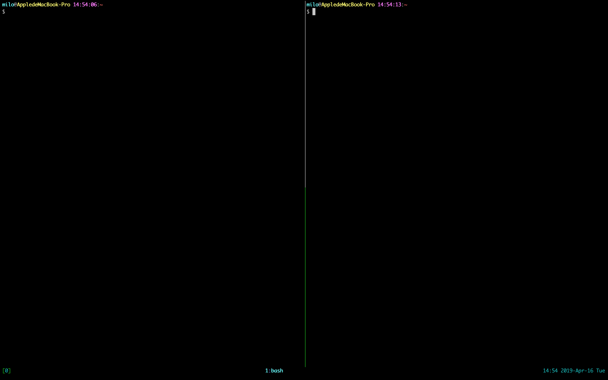
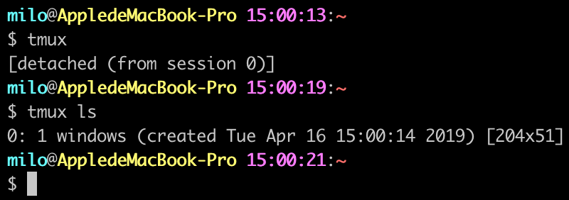

Tmux¶
简介¶
Tmux 是一个终端复用工具。可以在一个终端窗口上创建、访问、控制多个终端会话。
Tmux 可以创建多个 会话(session)，每个会话包含一个或多个 窗口(window)，每个窗口可以分割成一个或多个 面板(pane)。
所有会话都会保存在 Tmux 服务器中，每个客户端都可以连接到任意一个会话并在屏幕上展示。
服务器和每个客户端都是单独的进程，它们通过 /tmp 目录下的套接字文件进行通信。
在操作的过程中，无论客户端由于任何原因而断开了连接，只要服务器和会话没有关闭，都可以重新连接到之前的会话，继续进行未完成的操作。
另外，我们还可以同时连接到同一个会话上，实现实时地共享屏幕。
安装¶
Mac OS
brew install tmux
Ubuntu
sudo apt-get install tmux
▍安装完成之后，简单的使用一下
- 在终端输入命令
tmux就可以创建一个新的会话并连接到这个会话 - 按下
Ctrl+b，再按下%，可以看到当前面板被平分成左右两块
 - 按下
Ctrl+b，再按下方向键，可以在两个面板之间来回切换 - 按下
Ctrl+b，再按下d，就会脱离当前会话，回到终端 - 在终端内输入
tmux ls，可以查看当前 Tmux 服务器下的所有会话
 - 在终端内输入
tmux a，可以重新连接到刚才脱离的会话中
按键绑定¶
在一个已连接的客户端内，可以使用组合键来控制 Tmux。组合键由一个前缀键和一个命令键组成，前缀键默认是 C-b (Ctrl-b)
以下是常用的 Tmux 的默认命令键
| Ctrl + b | 激活控制台；此时以下按键生效 | |
| 系统操作 | ? | 列出所有快捷键；按q返回 |
| d | 脱离当前会话；这样可以暂时返回Shell界面，输入tmux attach能够重新进入之前的会话 | |
| D | 选择要脱离的会话；在同时开启了多个会话时使用 | |
| Ctrl+z | 挂起当前会话 | |
| r | 强制重绘未脱离的会话 | |
| s | 选择并切换会话；在同时开启了多个会话时使用 | |
| : | 进入命令行模式；此时可以输入支持的命令，例如kill-server可以关闭服务器 | |
| [ | 进入复制模式；此时的操作与vi/emacs相同，按q/Esc退出 | |
| ~ | 列出提示信息缓存；其中包含了之前tmux返回的各种提示信息 | |
| 窗口操作 | c | 创建新窗口 |
| & | 关闭当前窗口 | |
| 数字键 | 切换至指定窗口 | |
| p | 切换至上一窗口 | |
| n | 切换至下一窗口 | |
| l | 在前后两个窗口间互相切换 | |
| w | 通过窗口列表切换窗口 | |
| , | 重命名当前窗口；这样便于识别 | |
| . | 修改当前窗口编号；相当于窗口重新排序 | |
| f | 在所有窗口中查找指定文本 | |
| 面板操作 | ” | 将当前面板平分为上下两块 |
| % | 将当前面板平分为左右两块 | |
| x | 关闭当前面板 | |
| ! | 将当前面板置于新窗口；即新建一个窗口，其中仅包含当前面板 | |
| Ctrl+方向键 | 以1个单元格为单位移动边缘以调整当前面板大小 | |
| Alt+方向键 | 以5个单元格为单位移动边缘以调整当前面板大小 | |
| Space | 在预置的面板布局中循环切换；依次包括even-horizontal、even-vertical、main-horizontal、main-vertical、tiled | |
| q | 显示面板编号 | |
| o | 在当前窗口中选择下一面板 | |
| 方向键 | 移动光标以选择面板 | |
| { | 向前置换当前面板 | |
| } | 向后置换当前面板 | |
| Alt+o | 逆时针旋转当前窗口的面板 | |
| Ctrl+o | 顺时针旋转当前窗口的面板 | |
按键绑定可以通过 bind-key 和 unbind-key 命令来修改（前缀键和命令键都可以修改）
命令¶
常用命令：
| Command | alias | function |
|---|---|---|
| attach-session | attach | 连接会话 |
| source-file | source | 执行指定文件中的所有命令 |
| list-commands | lscm | 列出所有的命令 |
| list-sessions | ls | 列出所有的会话 |
| detach-client | detach | 客户端脱离会话（默认是当前客户端脱离） |
| bind-key | bind | 按键绑定 |
| list-keys | lsk | 列出所有已经绑定的按键 |
| send-keys | send | 发送按键 |
| unbind-key | unbind | 解除按键绑定 |
| set-option | set | 设置会话选项 |
| set-window-option | setw | 设置窗口选项 |
| show-options | show | 展示会话选项 |
| show-window-options | showw | 展示窗口选项 |
配置文件¶
通常，Tmux 服务器会在第一个会话创建的时候自动启动，在最后一个会话结束时自动关闭。
当 Tmux 服务器启动时，会执行 ~/.tmux.conf 中的命令。
把配置写入 ~/.tmux.conf 文件中，Tmux 服务器启动时自动执行文件中的命令，完成配置。
以下是我的配置：
set-option -g default-terminal "screen" set-option -g display-time 3000 set-option -g history-limit 65535 # copy-mode 将快捷键设置为 vi 模式 set-window-option -g mode-keys vi # 窗口的初始序号；默认为0，这里设置为1 set-option -g base-index 1 # 提示信息的持续时间；设置足够的时间以避免看不清提示，单位为毫秒 set-option -g display-time 5000 # 控制台激活后的持续时间；设置合适的时间以避免每次操作都要先激活控制台，单位为毫秒 set-option -g repeat-time 1000 # 操作状态栏时的默认键盘布局；可以设置为vi或emacs set-option -g status-keys vi # 如果你开了多个窗口，可能想当别的窗口发生什么的时候你能收到通知 set-window-option -g monitor-activity on set-option -g visual-activity on # 状态栏 # 颜色 set-option -g status-style bg=black # 对齐方式 set-option -g status-justify centre # 左下角 set-option -g status-left '#[bg=black,fg=green][#[fg=cyan]#S#[fg=green]]' set-option -g status-left-length 20 # 窗口列表 set-window-option -g automatic-rename on set-window-option -g window-status-format '#[dim]#I:#[default]#W#[fg=grey,dim]' set-window-option -g window-status-current-format '#[fg=cyan,bold]#I#[fg=blue]:#[fg=cyan]#W#[fg=dim]' # 右下角 set-option -g status-right '#[fg=green]#[fg=cyan]%H:%M %Y-%b-%d %a#[fg=green]' # 支持鼠标 set-option -g mouse on # 更改prefix键 set-option -g prefix C-x unbind-key C-b bind-key C-x send-prefix # 支持vi模式来切换pane # up bind-key k select-pane -U # down bind-key j select-pane -D # left bind-key h select-pane -L # right bind-key l select-pane -R